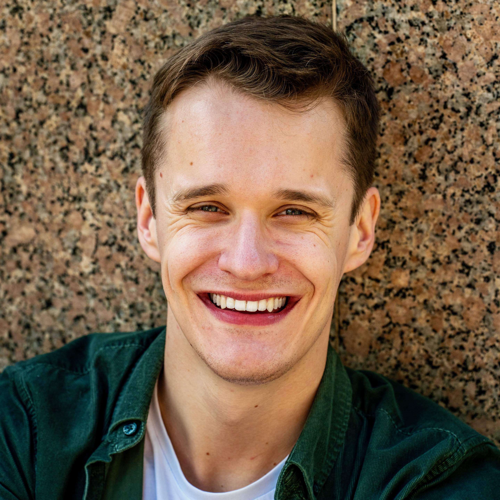
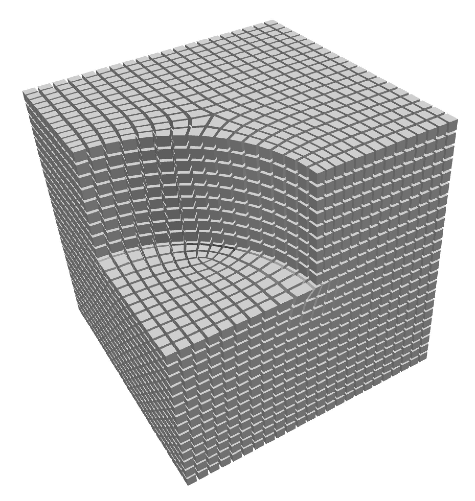
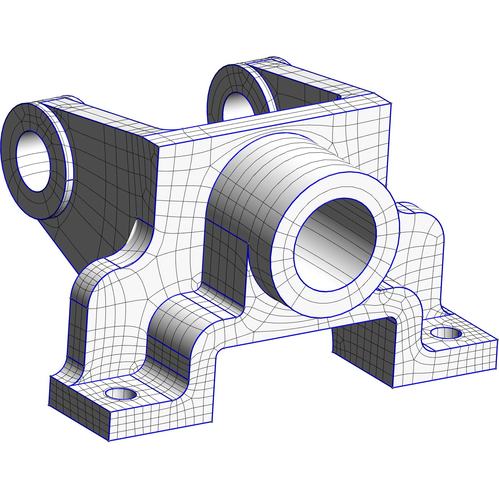
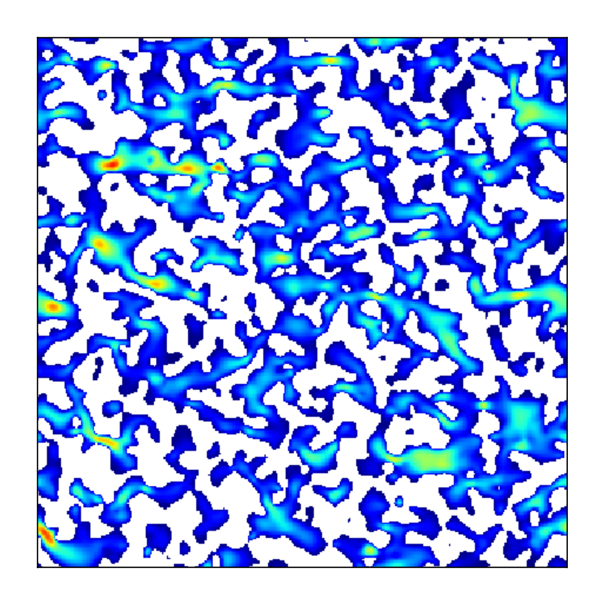

|
Mattéo Couplet I am a postdoctoral researcher in the Computer Graphics Lab at Boston University, working with Prof. Edward Chien. I am interested in the generation of structured meshes for engineering and graphics applications, and, lately, how it connects to computational fabrication problems like knitting and 3D printing. I did my PhD at UCLouvain in Belgium, where I was advised by Prof. Jean-François Remacle. I am grateful to be supported by the Belgian American Educational Foundation and Wallonie-Bruxelles International. |
 |
{kind=link}
Publications |

|
Curl Quantization for Automatic Placement of Knit Singularities
Rahul Mitra, Mattéo Couplet, Tongtong Wang, Megan Hoffmann, Kui Wu, Edward Chien SIGGRAPH, 2025 project page / DOI Vector field curl indicates where to place knit singularities. With this insight we develop a fast knit graph generation method, with guaranteed manufacturability. |
|

|
Integrable frame fields for quadrilateral and hexahedral meshing
Mattéo Couplet (advisor: Jean-François Remacle) PhD thesis, 2024 |
|
Integrable Frame Fields using Odeco Tensors
Mattéo Couplet, Alexandre Chemin, Jean-François Remacle SIAM International Meshing Roundtable, 2024 arXiv / DOI Odeco tensors are a natural representation for frame fields. We find new energies that make these fields integrable, with automatic creation and placement of singularities. |
|
|

|
Generation of High-Order Coarse Quad Meshes on CAD Models via Integer Linear Programming
Mattéo Couplet, Maxence Reberol, Jean-François Remacle AIAA Aviation, 2021 arXiv / DOI Building upon Gmsh's quasi-structured quadrilateral mesher, we compute coarse quad layouts through integer optimization. |
|

|
Porous media reconstruction using deep texture synthesis
Mattéo Couplet (advisors: Laurent Demanet, Laurent Jacques) Master thesis, 2020 Physically accurate 3D representations for porous media can be reconstructed from 2D slices by training deep neural networks on texture synthesis tasks. |
|
Website template from Jon Barron. |